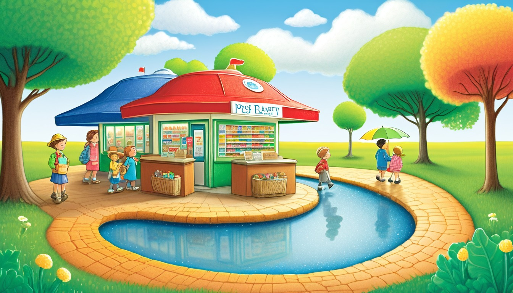

Ages 6-8
Printable tutoring writing sprint pack
Twenty 10-minute writing sprints for tutoring centers, small groups, after-school tables, and homeschool co-op tutors.
Best for: Literacy tutors, tutoring centers, after-school programs, homeschool co-op tutors, and small-group writing intervention leaders for ages 7-11.
Format: 20 printable 10-minute story sprints plus tutor setup tools
No scary harm, no bullying, no romance, no weapons, no branded characters, no real child profiles.
Tutor setup



Tutor tools
Best for: A first tutoring block when the writer needs a fast win with little setup.
Best for: Writers who make very short drafts and need more concrete description.
Best for: A middle sprint when the page has a setting but no movement yet.
Best for: Writers practicing conversation without a long draft.
Best for: A closing routine for revision, endings, and flexible thinking.
Tutor tools
Add one setting detail to today's invented place: ____________________.
A grown-up can ask what the place feels like: ____________________.
Choose one object from the sprint and write how it helps: ____________________.
A grown-up can offer two object choices here: ____________________.
Write one place title, one object title, and one action title: ____________________.
A grown-up can ask which title gives the clearest clue: ____________________.
Write first, next, and last for three small helper actions: ____________________.
A grown-up can point to the step that should become a sentence: ____________________.
Add one kind fix to the mix-up and write why it works: ____________________.
A grown-up can ask what changed after the kind fix: ____________________.
Write two short lines between invented roles: ____________________.
A grown-up can take one role and let the writer choose the reply: ____________________.
Pick one action word and trade it for a clearer verb: ____________________.
A grown-up can offer two action words and ask which one fits: ____________________.
Draw one tiny scene box and label three parts: ____________________.
A grown-up can ask how one label could start a sentence: ____________________.
Pick one muffin stall, add three tiny market details, and write one keeper sentence.
Ask which detail the reader can smell, see, or hear before asking for a full sentence.
Tutor setup: Print one page, set out a pencil, and offer two market choices before writing starts.
The moon muffin stall smells like ____________________________.
The stall light looks like ____________________________.
The crumb path leads to ____________________________.
The muffin helper carries ____________________________.
The helpful muffin can fix ____________________________.
The market bell tells everyone to ____________________________.
First, the helper notices ____________________________.
Next, the helper chooses ____________________________.
My best market sentence is ____________________________.
One market detail I want to keep is ____________________________.
Add one more smell, color, or sound: ____________________________.
Choose a bottle-cap stamp, plan three puddle stops, and write the delivery path in order.
Point to the three stops and ask what happens first, next, and last.
Tutor setup: Print one page, draw three small boxes on scrap paper, and let the writer point to a route choice.
The bottle-cap stamp shows ____________________________.
The stamp means the note goes to ____________________________.
The puddle planet has ____________________________.
First, the mail cart rolls past ____________________________.
Next, the leaf boat floats near ____________________________.
Last, the note lands beside ____________________________.
The mixed-up route starts when ____________________________.
The kind fix is to ____________________________.
My clear route sentence is ____________________________.
The order word that helped me most is ____________________________.
Add one new puddle stop after the last stop: ____________________________.
Make a ticket rule, choose a train stop, and write why the rule helps the tiny train.
Ask what the train needs to do calmly, then help the writer finish the because line.
Tutor setup: Print one page, offer two train-stop choices, and model one short because sentence.
The ticket rule says each rider must ____________________________.
The ticket color is ____________________________.
The rule helps because ____________________________.
The Buttonwood train stops at ____________________________.
The shelf beside the stop holds ____________________________.
The quiet bell reminds riders to ____________________________.
Without the rule, the train might ____________________________.
With the rule, the train can ____________________________.
My rule sentence is ____________________________.
The rule I wrote clearly is ____________________________.
Add one more reason the rule helps: ____________________________.
Pick one missing minute, show where it went, and write the fix in one short scene.
Ask what changed at the clocktower and what small fix would help right away.
Tutor setup: Print one page, set a quiet timer, and let the writer choose a berry, bell, or stair detail.
The missing minute is hiding near ____________________________.
The clockberry color is ____________________________.
The tower stair points toward ____________________________.
The bell helper tries ____________________________.
The minute moves when ____________________________.
The clocktower feels calmer because ____________________________.
At first, the clock shows ____________________________.
Then the helper notices ____________________________.
My fix sentence is ____________________________.
The clearest fix in my scene is ____________________________.
Add one clocktower sound or color: ____________________________.
Choose a reef lantern, mark three glow stops, and write how the paper boat moves.
Ask the writer to use beside, under, around, or past in one line.
Tutor setup: Print one page, draw a simple three-dot path, and invite the writer to trace it before writing.
The tiny lantern glows beside ____________________________.
The paper boat carries ____________________________.
The reef path begins under ____________________________.
The first glow stop is near ____________________________.
The second glow stop curves around ____________________________.
The last glow stop waits past ____________________________.
The boat moves slowly when ____________________________.
The lantern keeper points to ____________________________.
My reef direction sentence is ____________________________.
The direction word I used best is ____________________________.
Add one new glow stop with a direction word: ____________________________.
Sketch a door idea in words, spot one confusing part, and redraw the sentence with a clearer choice.
Ask what the door should do, then offer one add, move, or replace choice.
Tutor setup: Print one page, give one pencil and one eraser, and say the goal is one better line.
The pencil door opens toward ____________________________.
The dragon pencil marks ____________________________.
The first sentence idea is ____________________________.
One confusing part is ____________________________.
I can add, move, or replace ____________________________.
The clearer word I choose is ____________________________.
Before revision, the door seemed ____________________________.
After revision, the door shows ____________________________.
My redrawn sentence is ____________________________.
One word I improved is ____________________________.
Add one clearer academy detail to the sentence: ____________________________.
Sort the acorn errands, add one exact detail for each stop, and draft the helper note.
Ask which stop must happen first, then have the writer point to the detail that proves it.
Tutor setup: Print one page, choose three errand slips, and set a pencil beside the route box.
The first leaf slip asks for ____________________.
The second leaf slip belongs near ____________________.
The third leaf slip gives the clue ____________________.
First, the acorn clerk should ____________________.
Next, the helper needs to ____________________.
Last, the route finishes at ____________________.
My opening sentence starts with ____________________.
My middle sentence adds the detail ____________________.
My final sentence explains ____________________.
One sequence word I used well is ____________________.
Add a fourth stop that changes the route by ____________________.
Fix the bakery map by choosing clear clues, ordering the turns, and writing a tidy route draft.
Ask the writer to replace one vague word with a thing readers can picture.
Tutor setup: Draw a quick bakery path with three turns, then hand the writer the fill-in page.
The crumb map starts beside ____________________.
The button tray rolls toward ____________________.
The clearest bakery clue is ____________________.
Turn one goes past ____________________.
Turn two stops near ____________________.
Turn three ends beside ____________________.
First, the cart helper notices ____________________.
Next, the helper follows ____________________.
The map mixup is fixed when ____________________.
The exact noun that helped my map is ____________________.
Add one new bakery clue that points to ____________________.
Read the gauge clue, choose the railway stops, and draft a log that explains the route.
Ask what changed, why it matters, and which detail should appear before the next step.
Tutor setup: Set out the page, mark three imaginary gauge levels, and invite the writer to choose one route.
The rain gauge shows ____________________.
The first weather detail is ____________________.
The railway ticket points toward ____________________.
The water sample moves because ____________________.
The switch changes the route near ____________________.
The next stop needs a note about ____________________.
First, the conductor checks ____________________.
Then, the railway carries ____________________.
The log should end with ____________________.
One cause-and-effect phrase I used is ____________________.
Add a second gauge clue that changes the next stop to ____________________.
Choose a boot route, add dry path details, and write the ranger message in order.
Ask the writer to say the route aloud once, then write the words in the same order.
Tutor setup: Circle three route spots on the page and model one transition word aloud.
The boot route begins at ____________________.
The dry stepping spot is ____________________.
The puddle reflection shows ____________________.
First, the ranger checks ____________________.
After that, the ranger follows ____________________.
Finally, the route reaches ____________________.
My first sentence tells about ____________________.
My second sentence adds the detail ____________________.
My last sentence gives the message ____________________.
The transition word that made my route clearer is ____________________.
Add one route sign that warns the ranger to check ____________________.
Pick one park notice, add exact park details, and draft the helper's next message.
Ask which detail readers need first so the helper knows what to do.
Tutor setup: Offer three tiny notice choices and have the writer underline the clearest one.
The park notice asks for ____________________.
The helper should look near ____________________.
The missing detail on the notice is ____________________.
The bottle-cap bench sits beside ____________________.
The pebble path curves around ____________________.
The tiny sign points toward ____________________.
First, the helper reads ____________________.
Next, the helper adds ____________________.
The clearer park message says ____________________.
The detail that made my notice clearer is ____________________.
Write a second notice that asks for ____________________.
Follow the button compass, order the clues, and write a short direction draft.
Ask the writer to test the route by tracing each turn with a finger before drafting.
Tutor setup: Point to the compass shop, mark two path turns, and ask the writer to choose the final stop.
The compass needle points toward ____________________.
The penny path begins beside ____________________.
The shop clue shows ____________________.
Go around ____________________.
Stop when you see ____________________.
Turn toward ____________________.
First, the helper follows ____________________.
Next, the compass changes when ____________________.
The final direction says ____________________.
The direction word I used clearly is ____________________.
Add a new compass clue that leads to ____________________.
Choose a seed drawer, map the route, and draft a return note with exact observations.
Ask the writer to keep the best observation and remove one extra word before the final line.
Tutor setup: Set the map page beside a pencil, then ask the writer to choose one seed drawer and one route.
The seed drawer label says ____________________.
The packet contains ____________________.
The first map mark shows ____________________.
First, the route passes ____________________.
Next, the map turns near ____________________.
Last, the route arrives at ____________________.
The best observation is ____________________.
One word I can remove is ____________________.
My revised seed note says ____________________.
The observation I kept in my final note is ____________________.
Add a second seed drawer that changes the route by ____________________.
Write as the greenhouse helper who notices how the gears sound, move, and change the plant plan.
Ask which word makes the helper sound careful, curious, or excited.
Tutor setup: Set out the page, a pencil, and two detail cards; invite the writer to choose one machine and one plant detail.
The greenhouse helper sounds like ____________________.
The gear detail that fits this voice is ____________________.
One plant detail the helper notices is ____________________.
A short starter sentence could be ____________________.
A longer detail sentence could add ____________________.
The two sentences connect when ____________________.
The helper changes the gear plan by ____________________.
The final word that matches the voice is ____________________.
My greenhouse ending line is ____________________.
One voice word I used well was ____________________.
Next time, I can add one sharper machine detail: ____________________.
Create a two-line exchange where the second line changes what the scene is about.
Ask what the speaker wants before the line and what changes after the reply.
Tutor setup: Place three index cards face down, then have the writer pick one setting card and one voice card.
The first speaker sounds ____________________.
The second speaker sounds ____________________.
The theater setting creates a mood of ____________________.
The first line of dialogue is ____________________.
The reply changes the plan because ____________________.
A stage action between the lines is ____________________.
The paragraph begins with ____________________.
The middle sentence should reveal ____________________.
My theater ending line is ____________________.
The line that changed my scene most was ____________________.
Add one stage action that shows voice: ____________________.
Trade a fuzzy note for a clear revision task, then write the improved sentence.
Ask which exact word, detail, or order change will help a reader follow the idea.
Tutor setup: Offer three sample margin notes and ask the writer to choose one note to make more specific.
The fuzzy margin note says ____________________.
The clearer revision task is ____________________.
The part of the sentence to improve is ____________________.
A plain word I can trade out is ____________________.
A stronger detail I can trade in is ____________________.
The sentence sounds clearer when ____________________.
Before revision, the idea was ____________________.
After revision, the idea shows ____________________.
My market ending line is ____________________.
One revision choice I can explain is ____________________.
Try the same trade on another sentence: ____________________.
Write a museum label paragraph that tells readers what to notice first, next, and last.
Ask which detail belongs in the paragraph and which detail can wait.
Tutor setup: Put three object cards on the table and have the writer choose one clue worth explaining.
The object on the tower shelf is ____________________.
The clue readers should notice first is ____________________.
A detail I can leave out for now is ____________________.
My first sentence should point to ____________________.
My middle sentence should explain ____________________.
My final sentence should connect to ____________________.
The label sounds precise when I use ____________________.
One word I can revise for focus is ____________________.
My museum ending line is ____________________.
The detail that kept my paragraph focused was ____________________.
Write a second label with one new clue: ____________________.
Send one rough ending across the ferry and bring back a clearer final sentence.
Ask what the reader should understand at the final dock.
Tutor setup: Ask the writer to mark one opening detail, one middle turn, and one final echo before drafting.
The opening detail I can echo is ____________________.
The middle turn that matters is ____________________.
The rough ending currently says ____________________.
One word I can cut is ____________________.
One clearer word I can add is ____________________.
The ending feels stronger because ____________________.
The final sentence should show ____________________.
The echo from the opening is ____________________.
My ferry ending line is ____________________.
The ending choice I improved was ____________________.
Revise one more final sentence with an echo: ____________________.
Plan a paragraph route, then write the sentence that moves readers through the turn.
Ask which sentence gives the reader the clearest direction.
Tutor setup: Draw three small route dots and have the writer label the start, turn, and finish.
The paragraph starts at ____________________.
The paragraph turns when ____________________.
The paragraph finishes by showing ____________________.
A word that moves the route forward is ____________________.
A phrase that explains the turn is ____________________.
A sentence that connects two route dots is ____________________.
The clearest sentence in my route is ____________________.
One route detail I can revise is ____________________.
My compass ending line is ____________________.
The sentence that shaped my paragraph was ____________________.
Add one more route dot for a longer paragraph: ____________________.
Write a clear workshop paragraph that explains how the almost-invention gets tested and revised.
Ask where the reader might get confused and what sentence can fix that spot.
Tutor setup: Give the writer three step cards and ask which step must come first for the invention to make sense.
The invention almost works when ____________________.
The first step readers need is ____________________.
The step that needs clearer order is ____________________.
The instruction voice should sound ____________________.
A precise action word I can use is ____________________.
A sentence that explains the test is ____________________.
The test shows the inventor should revise ____________________.
The final note should help readers understand ____________________.
My invention ending line is ____________________.
One instruction sentence I made clearer was ____________________.
Add a test note that improves the ending: ____________________.